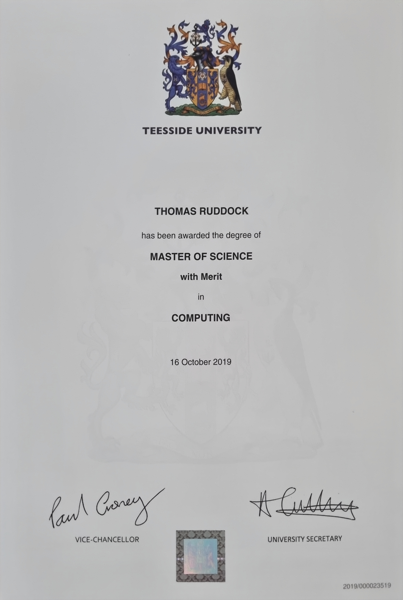

Discover my skills, learn about me, and get in touch!
View My PortfolioA Final Year Project to Build a Website, you can download the PDF to have a look through the layout, code, design and research for the website.
View My Fianl Year Project (PDF)
A module for creating a WordPress and Joomla websites. With research, planning and design.
View my Open Source Web Design (PDF)
I also did Statistical Methods using R Studio.
This module was Systems Administration and Security.
View my Systems Administration and Security (PDF)
This module was Mobile Systems and Cybersecurity.
View my Mobile Systems and Cybersecurity (PDF)
This module was Network and Systems Administration.
This module is my research paper for my Masters Degree.
This module is IT Ethics and Law.
View my IT Ethics and Law paper (PDF)
This module is Hacking the Human.
As a recent university graduate, I'm excited to bring a fresh perspective and solid academic foundation to the IT landspace. My studies have equipped me with a comprehensive understanding of IT hardware, from component-level diagnostics to system architecture, ensuringI can build and maintain robust technological infrastructures.
I have a strong aptitude for IT support, honed through many diffrenet University modules from "System Design and Databases", "Network and Secuirty", "Rapid Development Tools", "Network and Systems Security", "Rapid Development Systems" "Information Systems Security" and "Advanced Networks". Because of these modules I'm adept at troubleshooting diverse technical issues and providing clear, patient assistance to users, ensuring minimal downtime and maximum productivity. I enjoy delving into complex problems, identifying root causes, and devising effective, data-driven solutions to optimise systems and processes.
Beyond problem-solving, I'm also passionate about coding, with amateur knowledge in HTML5, CSS3, Jave, SQL, Wordpress. I've applied these skills in other University modules like "Client Side Scripting", "Web and Mobile Development", "Open Source Web Design", "Final Year Project" building a website. I also have ability in cyber security understanding the ever-evolving threat landscape. My academic background has provided me with a strong grasp of security principles, risk management, and the implementation of defensive strategies to protect critical date and systems. I'm eager to apply this blend of technicla skills and analytical thinking to contribute to a dynamic team.
Teesside Univeristy, 2018. Focused on Hardware, Software and Coding.
Teesside Univeristy, 2019. Specialised in Networking.
NCFE, 2025. Learning about management and work flow techniques.
Wating for Certificate to upload HERE.
Feel free to reach out for job Offers or inquiries
Name: Thomas Ruddock
Phone: 07741303418
Email: thomasruddock19@gmail.com
LinkedIn: https://www.linkedin.com/in/thomas-ruddock-b8201814b